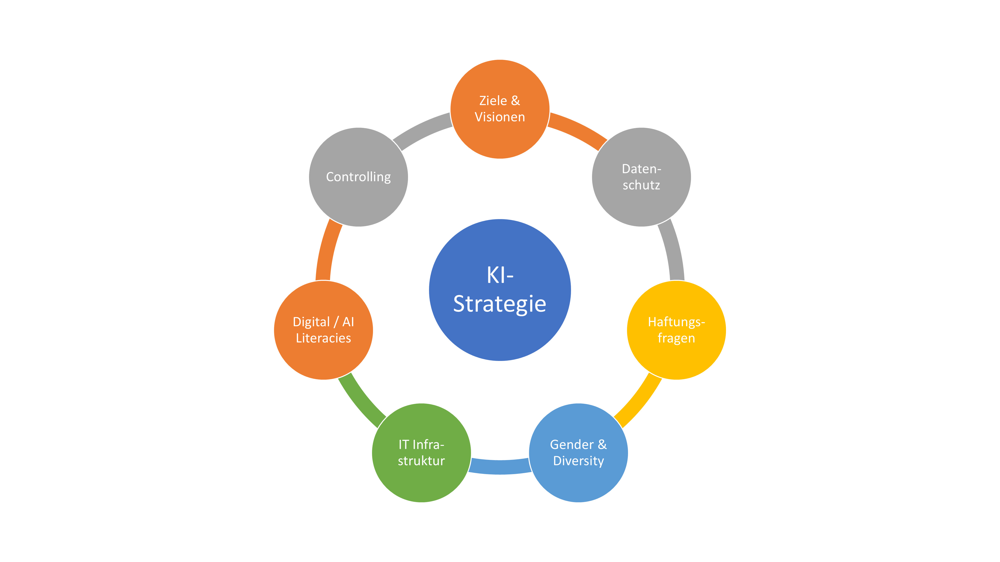

KI in der Sozialen Arbeit: Handlungsempfehlungen und Reflexionsfragen

Auf dieser Seite geben wir einen Überblick über von uns entwickelte Handlungsempfehlungen zur nachhaltigen Implementierung von KI-Tools in Organisationen der Sozialen Arbeit. Eine ausführliche Version der Handlungsempfehlungen zu den Themen Bestandsaufnahme, KI-Strategie sowie Digital / AI Literacies inklusive Reflexionsfragen für Führungskräfte kann im Downloadbereich als PDF heruntergeladen werden.
Bestandsaufnahme
Die Entwicklung einer gemeinsamen Haltung und konkreter Zielperspektiven ist eine notwendige Voraussetzung für eine nachhaltige KI-Implementierung. Folgende Themen sind hierbei zentral:
- Prozessanalyse: In einem ersten Schritt sollte geklärt werden, welche Ziele in der Kinder- und Jugendarbeit verfolgt werden und wie KI-Tools Organisationen und Fachkräfte bei der Erreichung dieser Ziele unterstützen können.
- Technikfolgenabschätzung: Für eine nachhaltige Implementierung von KI-Tools ist es notwendig, eine Technikfolgenabschätzung durchzuführen, um nicht nur Potenziale, sondern auch Grenzen des KI-Einsatzes im Blick zu behalten.
- Haltungen in der Organisation: Die Reflexion der Einstellungen und Werte von Fach- und Führungskräften gegenüber KI ist eine wesentliche Voraussetzung, um zu entscheiden, wo die Organisationsmitglieder abzuholen sind.
- Digital / AI Literacies: In gemeinsamen Workshops oder einer Fragebogenerhebung sollte festgestellt werden, über welche Digital / AI Literacies Fachkräfte verfügen und welche ihnen fehlen.
KI-Strategie
Neben einer Bestandsaufnahme ist es wichtig, eine KI-Strategie für die Organisation zu entwickeln, um KI-Tools effizient und nachhaltig einzusetzen. Die folgende Abbildung umfasst jene sieben Themen, die in einer KI-Strategie festgehalten werden sollten.
Die KI-Strategie sollte allen Mitgliedern der Organisation zur Verfügung gestellt und in regelmäßigen Abständen aktualisiert werden. Detaillierte Ausführungen zu den einzelnen Themen befinden sich im PDF-Dokument "Reflexionsfragen für eine nachhaltige KI-Implementierung" im Downloadbereich.
Einführung neuer KI-Tools
Auswahl von geeigneten Tools
Bei der Entscheidung über die Auswahl von geeigneten KI-Tools spielen folgende Faktoren eine entscheidende Rolle: Kosten, Komplexität und Anwendungszweck. Für Organisationen der Sozialen Arbeit gibt es in diesem Zusammenhang die nachfolgenden Punkte zu bedenken.
- Self-Hosting: Self-Hosting bedeutet, dass eine Organisation KI-Modelle auf eigener Hardware oder in einer privaten Cloud-Umgebung betreibt, anstatt auf externe Dienste zugreifen zu müssen. Dies bietet maximale Kontrolle, ist aber mit erheblichen Infrastruktur- und Personalkosten verbunden und somit für Organisationen der Sozialen Arbeit meistens ungeeignet.
- Generative KI-Tools: eignen sich in der Sozialen Arbeit besonders für Textgenerierung, Übersetzungen, Zusammenfassungen und ähnliche Aufgaben. Für diesen Bereich empfehlen wir insbesondere Customised Tools. Die zugrunde liegenden Modelle (z.B. Llame, OpenAI) können mittels Fine-Tuning kostengünstig an die Bedürfnisse der Organisationen angepasst werden.
- Regelbasierte Tools eignen sich für strukturierte Entscheidungsprozesse, z.B. für die Anamnese, Diagnose, Hilfeplanung oder Predictive Risk Modelling.
Einführung neuer KI-Tools auf Basis des Human-in-the-Loop-Ansatzes
Bei der Einführung und Evaluierung neuer KI-Tools ist es wichtig, dies auf Basis des Human-in-the-Loop-Ansatzes durchzuführen. So sollte KI stets in Interaktion mit Menschen getestet, überwacht, optimiert und korrigiert werden.
- Testphase: Vor der konkreten Einführung neuer KI-Tools sollten diese gemeinsam mit Fachkräften getestet werden. Die Fachkräfte sollten hierbei KI-Ergebnisse mit ihren Bewertungen abgleichen.
- Evaluierung: Menschliche Intelligenz sollte auch anschließend in alle KI-Prozesse eingebunden bleiben, um sicher zu stellen, dass die von der KI generierten Ergebnisse korrekt, vertrauenswürdig und ethisch vertretbar sind.
Digital / AI Literacies
Seit Februar 2025 verpflichtet der AI Act der Europäischen Union Organisationen dazu, sicherzustellen, dass ihre Mitarbeiter:innen kompetent im Umgang mit KI sind. So sollten auch Fachkräfte der Sozialen Arbeit realistisch einschätzen können, wozu KI in der Lage ist und wo hier die Grenzen liegen.
- Wissen vermitteln: Fachkräfte sollen lernen, wie generative KI und regelbasierte Tools funktionieren und für unterschiedliche Anwendungsbereiche effektiv genutzt werden können. Sie sollen außerdem über juridische Grundlagen informiert sein.
- Praxis ermöglichen: Fachkräfte sollen verschiedene Tools ausprobieren und grundlegende Techniken für den Umgang mit KI-Tools (z.B. Prompting) erlernen. Hierzu gehören auch das gemeinsame Interpretieren und Bewerten von KI-Ergebnissen. Sinnvoll wäre hier ein Szenario-basiertes Training, in dem Fachkräfte typische Fehlerfälle durchspielen.
- Reflexion fördern: Fachkräfte sollen für Potenziale und Herausforderungen von KI-Tools sensibilisiert werden. Hierzu zählt insbesondere auch die Förderung einer geschlechter- und diversitätssensiblen Perspektive.
Geschlechter- und diversitätssensible Perspektive
Wenn an der Gestaltung von Produkten und Technologien eine Gruppe (z.B. Männer) überdurchschnittlich stark beteiligt ist, kann es dazu kommen, dass Produkte und Technologien (unbewusst) so entwickelt werden, dass sie nur die Bedürfnisse und Erfahrungen dieser Gruppe berücksichtigen.
Ein geschlechter- und diversitätssensibler Umgang mit KI-Tools ist daher eine wesentliche Voraussetzung dafür, möglichen Diskriminierungen auf die Spur zu kommen und entgegenzuwirken. Je nach Tool gilt es hier unterschiedliche Aspekte zu beachten.
Vorurteile in generativen KI-Modellen
- Large Language Models wie GPT-4, Claude oder Llama spiegeln Vorurteile und Verzerrungen in ihren Trainingsdaten wider.
- Dies kann zu problematischen Ausgaben führen, besonders bei Themen zu Geschlecht, Ethnie oder anderen sensiblen Kategorien.
- Ursachen: Historische Verzerrungen in Trainingsdaten, unausgewogene Repräsentation, fehlende Diversität bei der Entwicklung.
- Beispiele für Gegenmaßnahmen: OpenAI's RLHF (Reinforcement Learning from Human Feedback), Anthropic's Constitutional AI, Debiasing-Techniken von Google.
Transparenz und Fairness bei regelbasierter KI
- Bei KI-Systemen, die strukturierte Daten nutzen (z.B. für Scoring oder Risikobewertung), ist Transparenz entscheidend.
- Fairness-Audits und Algorithmen-Prüfungen können systematische Benachteiligungen identifizieren.
- Tools wie IBM's AI Fairness 360, Aequitas (University of Chicago) oder Google's What-If Tool ermöglichen die Überprüfung von Modellen auf Diskriminierung.
- EU AI Act fordert für Hochrisiko-KI-Systeme erhöhte Transparenz und regelmäßige Bewertungen der Fairness.
Gestaltung fairer KI-Interaktionen
- Moderne Chatbots wie GPT-4 oder Claude können so konfiguriert werden, dass sie geschlechtergerechte Sprache verwenden und inklusive Werte vermitteln.
- Bei der Entwicklung eigener Chatbot-Personas sollten diverse Perspektiven einbezogen werden.
- Auch die Benutzeroberfläche und die Art der Interaktion sollten auf Barrierefreiheit und Inklusivität geprüft werden.
- Beispiele: Microsoft's Responsible AI Toolbox, Anthropic's Responsible Scaling Policy, Google's Inclusive ML Guide.
Zitiervorschlag: Susanne Sackl-Sharif, Christian Steiner, Sabine Klinger, Esther Brossmann-Handler & Andrea Mayr (28.02.2025). KI in der Sozialen Arbeit. Handlungsempfehlungen und Reflexionsfragen. https://digitalesozialearbeit.github.io/ai-socialwork/ai-recommendations